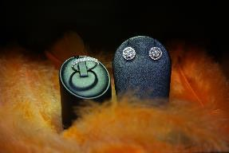
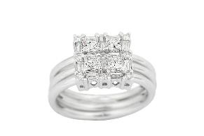
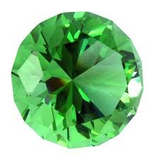
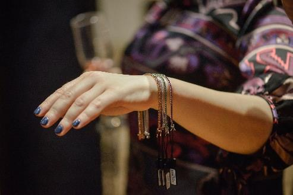

How to choose the perfect diamond
For most people, choosing a piece of jewellery is a new experience. However, this should not be an overwhelming experience. It’s easy to understanding the characteristics and quality of a diamond.
The training we offer in the field of diamonds is tailored so as to address all of your questions. It explains the characteristics of a diamond, the way they influence the diamond’s appearance, and their importance. In just a few minutes, you will find out everything you need to know to choose the perfect diamond.
Diamond shape
Due to the major differences in the shape of diamonds, the quality of the brilliant is determined based on unique characteristics, depending on the shape. Choose the shape below to learn how to recognise the most beautiful diamond. If you have any questions, please contact one of our consultants in diamonds and jewellery that can help you find the perfect diamond for you

Round diamonds
The round brilliant is by far the most popular and well-documented diamond cut. For almost 100 years, the diamond cutters have used advanced theories on the behaviour of light and precise mathematical calculations to optimize the „fire” and the brilliance of the round diamond.
In order to maximize the brilliance of the traditional round diamond, choose one of the two higher cut grades (ideal or very good) and select an ideal, excellent or very good polish, and the same for symmetry.
Princess cut diamonds
This is the most popular non-round diamond. Its superb brilliance and unique cut make it ideal for engagement rings. In addition, princess cut diamonds can vary greatly in shape (square or rectangular).
Emerald cut diamonds
The special look of this diamond is due to the step cuts of its pavilion that create a unique optical impression. The large, open table of the emerald cut diamond highlights its clarity.
Asscher cut diamonds
This uniquely beautiful diamond is very similar to the emerald cut diamond, but it has a square shape. It features also the step cuts of the pavilion in the same style with that of the emerald cut diamond.
Marquise diamond
The shape of the Marquise diamond may maximize its carat weight, thus creating the illusion of greater size. This brilliant-cut diamond is gorgeous when surrounded by round or pear-shaped gemstones, while the length of the Marquise diamond makes the finger look longer and suppler.
Oval diamonds
The oval diamond has divine brilliance, similar to that of the round diamond. Oval diamonds are very popular because their length may highlight long and supple fingers.
Radiant cut diamonds
The smoothed corners are the unique characteristic of this diamond, and make the radiant cut a popular and versatile choice for jewellery. The radiant cut looks beautiful along with rounded or square cornered gems. Radiant cut diamonds may have various rectangular shapes.
Pear shaped diamonds
This brilliant-cut diamond is also called a „teardrop” diamond due to its unique tapered point at one end and to the rounded shape at the other end. The unique look of the pear shape makes this diamond very popular for various jewellery. If you choose an elongated pear-shaped diamond, its length creates a subtle thinning effect of the finger wearing it.
Heart shaped diamonds
The heart is the ultimate symbol of love. Due to its unique appearance, the heart shaped diamonds are an excellent choice for various types of jewellery.
Cushion cut diamonds
This unique form has been popular for over 100 years. The cushion cut diamonds (also known as pillow shaped diamonds) have rounded corners and large facets that highlight its brilliance.
Diamond clarity

Clarity measures the number and size of small imperfections that occur in almost all diamonds. Many of these imperfections are microscopic and do not visually affect the beauty of a diamond.
Normally, the clarity of a diamond is very important, but, out of the „four Cs”, it is the most understandable and, according to many experts, has the least impact on the appearance of a diamond.
Clarity simply refers to the small imperfections naturally occurring in almost all the diamonds, except the most exclusive ones. Diamond experts refer to these flaws using various technical denominations, including, among others, blemishes or inclusions. Diamonds with the rarest and smallest imperfections receive the highest clarity grade. Because these defects tend to be microscopic, they do not visually affect the beauty of a diamond.
What quality grade is right for you?
-
The „eye-clean” diamond has no imperfections in the crown, visible to the unaided eye. Excellent in terms of price, diamonds of this clarity grade are much less expensive than the „flawless” (FL) or „internally flawless” (IF) diamonds which are extremely rare and very expensive.
-
Often, imperfections in diamonds classified as „slightly included” (SI) are not visible to the unaided eye and this makes them attractive in terms of price. If you are considering an SI grade diamond, please contact a consultant in diamonds and jewellery to assess the diamond in order to be sure that the imperfections are not visible to the unaided eye.
Colour – picture with the coloured ring
The colour actually refers to the lack of colour of a diamond, the assessment being based on how white a diamond is.
The D colour grade is the highest grade possible, while the Z colour grade is the lowest grade possible.
Colour grade:
Z-N Visible colouring
M-K Visible colouring
J-I Near colourless. An exceptional value with a slight tint.
H-G Near colourless. Difficult to detect colour, except when compared to a diamond of a higher quality. An excellent value.
F-E Colourless. Any traces of colour can be detected only by an expert. A rare diamond.
D Absolutely colourless. The highest grade, an extremely rare diamond.
The colour of a diamond is slightly yellow, and, consequently, the colour grade of a diamond is determined based on its lack of colour. The less coloured a diamond is, the greater the colour grade is. After the cut, the colour is considered the second most important characteristic when choosing a diamond. This is because the human eye tends to detect the spark of a diamond first (light performance), and then the colour.
DIAMOND WEIGHT (carats)

The carat is a unit of measurement of a diamond’s weight, but it cannot normally reflect with precision the size of a diamond.
We tend to assess the size of a diamond from above, because this is how it is presented to us when set in a ring.
In order to understand the size of a diamond, two other criteria must be taken into account besides the carat weight.
-
The distance in millimetres across the top of the diamond.
-
The quality of the diamond cut.
As the name suggests it, the total carat weight refers to the weight of the diamond. However, as a person's weight is not necessarily correlated with his/her height, the carat does not reflect by itself the size of a diamond. In order to comprehensibly understand the size of a diamond, please consider the total carat weight and two other characteristics: 1) distance in millimetres across the top of the diamond, and 2) the grade of the diamond cut.
The distance across the top of the diamond is important because this is the most visible side when the gemstone is set in a ring.
The quality of the diamond cut needs to be taken into account because when a diamond is cut correctly, the maximum amount of light (spark, brilliance) is reflected on the upper part of the diamond. Therefore, when a diamond is properly cut, the light reflected by the upper part creates the illusion of greater size. In addition, most of the mass of a poorly cut diamond will be obstructed at the bottom of the brilliant, which will make it smaller than the carat weight suggests it.
Thus, you may find a diamond with a smaller carat weight, but with a cut of a better quality which makes it seem larger than a diamond with a higher carat weight, but with a lower cut grade.
Once you have chosen the perfect cut, colour and cut quality, it is easy to determine what carat weight fits your budget.
In order to choose the best carat weight of a diamond, please also take into account the size of your finger, the size of the jewellery where the diamond is to be set and your budget.